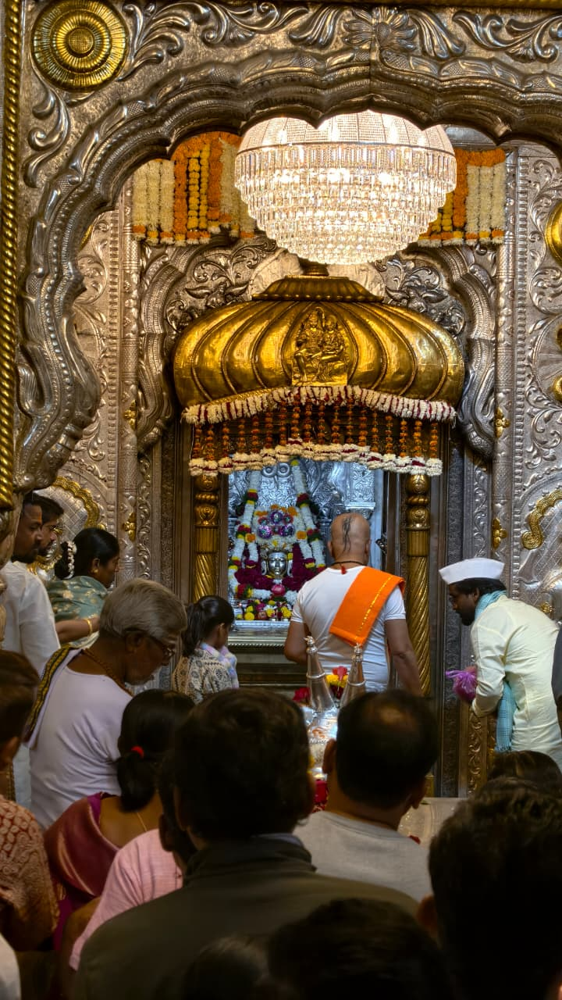
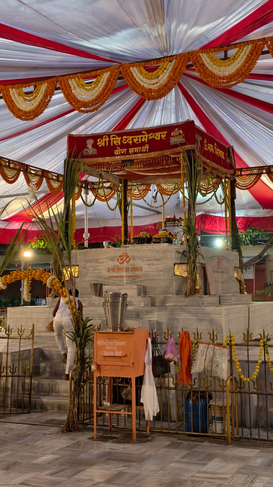

Shri Siddheshwar Mandir, Solapur
Shri Siddheshwar Mandir is the spiritual heart of Solapur and the starting point of the sacred 68 Ling Yatra. The temple is dedicated to Lord Shiva and holds immense religious, historical, and cultural importance.
About Siddheshwar Mandir
Siddheshwar Mandir is one of the oldest and most revered temples in Solapur. The temple is closely associated with Shri Siddharameshwar Maharaj and is the center of major religious events like the famous Gadda Yatra.
The temple complex houses multiple sacred Shivlings and marks the beginning of the traditional 68 Ling pilgrimage, which devotees complete with deep faith and devotion.
Spiritual Significance
- Starting point of the 68 Ling Yatra
- Associated with Siddharameshwar Maharaj
- Major center of Shaivite tradition
- Famous for annual Siddheshwar Yatra


Temple & Samadhi
The Siddheshwar Temple is dedicated to Shri Siddheshwar, a 12th-century devotee of Lord Shiva who is revered as a divine figure in the Lingayat faith and worshipped as the Grāmadevatā (guardian deity) of Solapur.
It was at this sacred site that Shri Siddheshwar attained Samadhi in 1167 AD. A marble Samadhi stands at the center of the temple today, making the location deeply revered by devotees.
68 Shiva Lingams
Shri Siddheshwar is believed to have installed 68 Shiva Lingams within the main courtyard of the temple. Among them, the Amrit (Immortality) Lingam holds special spiritual importance.
The temple complex also houses smaller shrines dedicated to Lord Ganesha, Vithoba, and Rukmini. Inside the sanctum, devotees can see an idolic effigy of Shri Siddheshwar along with a silver-plated Nandi, the sacred bull of Lord Shiva.
History & Administration
According to historical records, the temple was established by Shri Siddharameshwar, a yogi and devotee of Shri Mallikarjuna of Srisailam. He constructed the temple and installed the 68 Shiva Lingams under the guidance of his guru.
Since 1899, the temple and the adjoining lake have been administered by the Shri Siddheshwar Devsthan Panch Committee.
Festivals & Yatra
The most auspicious time to visit the temple is during Makar Sankranti (mid-January), when a grand three-day celebration takes place. The famous Gadda Yatra is organized for nearly fifteen days, attracting thousands of devotees from across Maharashtra.
Lingam Directory
Browse through all 68 lingams. Click on any lingam to view details and open location in Google Maps.
About the 68 Ling Yatra
The 68 Ling Yatra in Solapur is a sacred pilgrimage connecting devotees with 68 ancient Shivlings spread across the city.